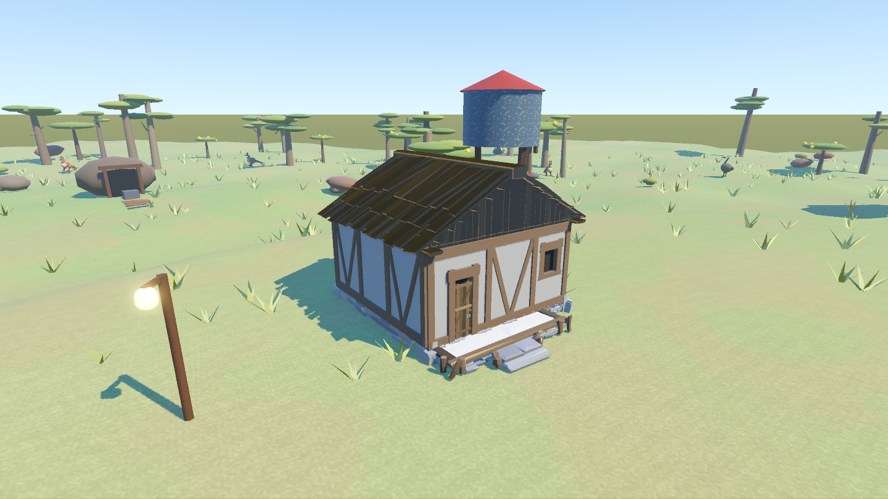
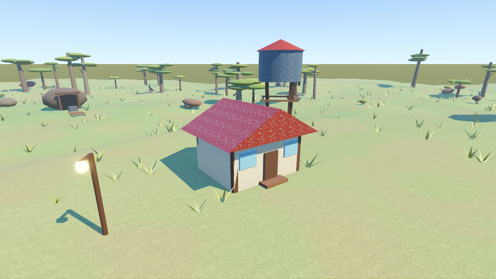

DinkumTown3D · 2026-10-05 · EmacEArt 美术试换
已替换一栋小屋和第一只木箱
镇上原红色铁皮小屋改为木顶、木框与石基小屋；第一只可推动木箱改用资源包模型。已适配入口、台阶、静态碰撞与存档，其他建筑继续使用原有外观。
同机位前后对比
拖动滑块查看变化


替换前替换后适配依据
| 对象 | 处理与实测 |
|---|---|
| 组合小屋 | EA03_Town_House_Comp_01a；原包边界约11.54×8.62×9.87米。水平缩放0.72、墙体垂直0.95；石基、门廊与高屋顶分别适配。最终外观约7.11×5.21×8.31米。 |
| 门与台阶 | 原门洞横向偏移，旋转后门朝广场。入口按网格位置登记；出门落点对齐中央台阶，避免直走撞左栏杆。补入资源包门板，暗色内衬挡住窗洞后的天空。保留按F进入原室内的流程。 |
| 碰撞 | 小屋仅保留一套StaticBody3D，网格碰撞保留凹门廊与台阶；木箱只替换外观，保持原RigidBody3D与物理参数。 |
| 木箱 | EA03_Prop_Container_Crate_02a；原包1.041×0.853×0.977米，归一到0.95米盒。木箱仍可推动，外观身份随存档保存；旧存档只迁移第一只箱子。 |
| 美术体积 | 小屋含补入门与内衬约7127三角面，木箱490三角面。两个本地场景合计约407KiB，均内嵌网格与调色板，无原包路径或FBX依赖。没有新增插件。 |
这次采用模型原有调色板风格，效果是模型细节与造型变化；不是写实PBR贴图升级。
验收结果
| 检查 | 结果 |
|---|---|
| 资源包行为 | 25项通过：范围、尺寸、单套碰撞、入口、实际步行上台阶并横移到门前、进出屋、存档恢复与旧存档迁移。 |
| 无素材包的源码检出 | 19项通过，自动回退到程序化外观，仍可运行。 |
| 战斗／水域／物理／UI | 102／37／23／1907项全绿；e2e、室内检查 fails=0。 |
| 触控布局 | 1440×810、1280×720、1920×1080、2560×1440、720×1280、810×1440、1080×1920、1440×2560，均bad=0。 |
| 安装与截图 | 从原始ZIP实测本地安装脚本；前后8张截图已检查。真实手机性能未测，未对帧率作保证。 |
部分headless检查仍有项目既有的ObjectDB退出泄漏提示；未出现脚本解析或运行错误，游戏截图进程的错误输出为空。
本地使用与源码同步
当前电脑已安装好，正常启动游戏即可看到替换。资源包许可允许在个人、商业游戏中使用、修改与随游戏发布，但禁止独立素材再分发，因此原始／转换后的美术只放在被Git忽略的 local_assets/emace/。仓库同步接入代码、导入工具与游戏截图。
在另一台电脑，从原作者资源页面下载ZIP，在项目根目录运行：
powershell -ExecutionPolicy Bypass -File tools/install_emace.ps1 -ZipPath "C:\Downloads\SlavicWorldFree_Godot_2026-09-06.zip" # Godot不在默认Tools/Godot/Godot.exe时，再加： # -GodotPath "C:\Tools\Godot\Godot.exe"
脚本独立导入资源包，输出自包含小屋与木箱，并复制LICENSE.txt；完成后清理随机临时目录，不覆盖游戏项目设置。无需复制完整包进游戏。
启动参数 -- --no-emace 可临时查看原外观。验证使用 res://tools/emace_check.tscn；截图使用 res://tools/emace_shot.tscn，窗口模式运行。
依据：包内LICENSE.txt与README.txt；Godot 4.7.2导入、固定种子游戏检查与真实截图。原包页面当前版本标记为unstable，本次仅验收所选模型。